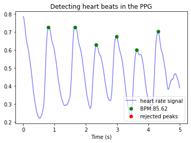

Detecting beats in the PPG signal
Contents
Detecting beats in the PPG signal¶
Beats are detected in the PPG signal in order to segment individual pulse waves for analysis.
Specify an ICU stay and segment¶
Resource: These steps are taken from the Data Visualisation tutorial.
Specify the required Python packages
import sys
import wfdb
Get a list of ICU stays in the database
database_name = 'mimic3wdb/1.0' # The name of the MIMIC III Waveform Database on Physionet (see URL: https://physionet.org/content/mimic3wdb/1.0/)
icustay_records = wfdb.get_record_list(database_name)
print("There are {} ICU stays in the database".format(len(icustay_records)))
There are 67830 ICU stays in the database
Specify an ICU stay
icustay_no = 10 # specify the first record (noting that in Python the first index is 0)
icustay_record = icustay_records[icustay_no]
icustay_record_dir = database_name + '/' + icustay_record
icustay_record_name = icustay_record.split("/")[1]
print("Specified ICU stay: {}".format(icustay_record_name))
Specified ICU stay: 3000125
Specify a segment of this ICU stay
icustay_files = wfdb.get_record_list(icustay_record_dir)
icustay_segments = [s for s in icustay_files if "_" in s]
icustay_segment_no = 4;
icustay_segment_name = icustay_segments[icustay_segment_no]
print("Specified segment: '{}' within ICU stay '{}'".format(icustay_segment_name, icustay_record_name))
Specified segment: '3000125_0005' within ICU stay '3000125'
Extract data for this segment¶
Resource: These steps are taken from the Data Visualisation tutorial.
Specify the timings of the data to be extracted
start_seconds = 60 # time since the start of the segment at which to begin extracting data
no_seconds_to_load = 5
Find out the sampling frequency of the waveform data
segment_metadata = wfdb.rdheader(record_name=icustay_segment_name, pn_dir=icustay_record_dir)
fs = segment_metadata.fs
Extract the specified data
sampfrom = fs*start_seconds
sampto = fs*(start_seconds+no_seconds_to_load)
segment_data = wfdb.rdrecord(record_name=icustay_segment_name, sampfrom=sampfrom, sampto=sampto, pn_dir=icustay_record_dir)
print("{} seconds of data extracted from: {}".format(no_seconds_to_load, icustay_segment_name))
5 seconds of data extracted from: 3000125_0005
Extract the PPG signal¶
Resource: This step is taken from the Differentiation tutorial.
Extract the PPG signal from the segment data
ppg = segment_data.p_signal[:,2]
Detect beats in the PPG signal¶
Import the HeartPy package, which includes code for detecting beats in PPG signals.
pip install heartpy
Collecting heartpy
Downloading heartpy-1.2.7-py3-none-any.whl (1.0 MB)
?25l ━━━━━━━━━━━━━━━━━━━━━━━━━━━━━━━━━━━━━━━━ 0.0/1.0 MB ? eta -:--:--
━━━━━━━━━━━━━━━━━━━━╺━━━━━━━━━━━━━━━━━━━ 0.5/1.0 MB 16.0 MB/s eta 0:00:01
━━━━━━━━━━━━━━━━━━━━━━━━━━━━━━━━━━━━━━━━ 1.0/1.0 MB 20.7 MB/s eta 0:00:00
?25hRequirement already satisfied: numpy>=1.17 in /opt/hostedtoolcache/Python/3.9.13/x64/lib/python3.9/site-packages (from heartpy) (1.23.0)
Requirement already satisfied: scipy in /opt/hostedtoolcache/Python/3.9.13/x64/lib/python3.9/site-packages (from heartpy) (1.8.1)
Requirement already satisfied: matplotlib in /opt/hostedtoolcache/Python/3.9.13/x64/lib/python3.9/site-packages (from heartpy) (3.5.2)
Requirement already satisfied: pyparsing>=2.2.1 in /opt/hostedtoolcache/Python/3.9.13/x64/lib/python3.9/site-packages (from matplotlib->heartpy) (3.0.9)
Requirement already satisfied: packaging>=20.0 in /opt/hostedtoolcache/Python/3.9.13/x64/lib/python3.9/site-packages (from matplotlib->heartpy) (21.3)
Requirement already satisfied: kiwisolver>=1.0.1 in /opt/hostedtoolcache/Python/3.9.13/x64/lib/python3.9/site-packages (from matplotlib->heartpy) (1.4.3)
Requirement already satisfied: python-dateutil>=2.7 in /opt/hostedtoolcache/Python/3.9.13/x64/lib/python3.9/site-packages (from matplotlib->heartpy) (2.8.2)
Requirement already satisfied: cycler>=0.10 in /opt/hostedtoolcache/Python/3.9.13/x64/lib/python3.9/site-packages (from matplotlib->heartpy) (0.11.0)
Requirement already satisfied: pillow>=6.2.0 in /opt/hostedtoolcache/Python/3.9.13/x64/lib/python3.9/site-packages (from matplotlib->heartpy) (9.1.1)
Requirement already satisfied: fonttools>=4.22.0 in /opt/hostedtoolcache/Python/3.9.13/x64/lib/python3.9/site-packages (from matplotlib->heartpy) (4.33.3)
Requirement already satisfied: six>=1.5 in /opt/hostedtoolcache/Python/3.9.13/x64/lib/python3.9/site-packages (from python-dateutil>=2.7->matplotlib->heartpy) (1.16.0)
Installing collected packages: heartpy
Successfully installed heartpy-1.2.7
Note: you may need to restart the kernel to use updated packages.
import heartpy as hp
Analyse using HeartPy
working_data, measures = hp.process(ppg, fs)
print("HeartPy estimated the heart rate to be: {:.1f} bpm".format(measures['bpm']))
HeartPy estimated the heart rate to be: 85.6 bpm
Plot the results using HeartPy’s plotting function
hp.plotter(working_data, measures, title='Detecting heart beats in the PPG')
